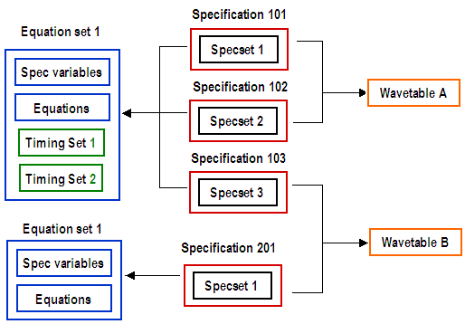

Data organization of equation based timing
With equation based timing, you can use variables in the definitions of edge positions and period lengths. This allows you, for example, to define general relations between period length and edge delays which are preserved when the value of the variable is changed (for example, place an edge in the middle of a tester cycle for different cycle lengths).
Equation based timing setups consist of three main types of data collections:
- Timing sets and variable definitions are contained in an equation set (see Setting delays and periods)
- Waveforms are defined in a wavetable (see Defining waveform shapes)
- The values for the variables are defined in a specification set within a timing specification (see Defining the timing specification).
One timing setup file can contain several instances of each of these three types. A timing specification defines which equation set, wavetable, and value set for the variables is to be used in a test. A timing setup file can contain several timing specifications.
The data collections are downloaded with the EQFS and EQSP commands. The collections themselves cannot be edited with firmware commands. But you can query their content with firmware commands, and also change definitions at runtime.
Equation sets
Equation sets are identified by a number > 0. Their main building blocks are in this order:
- A list of base variables (also called spec variables).
This (optional) part of the equation set is identified by the keyword SPECS. The variables, which are also called briefly specs, are only declared in the equation set, they are not assigned a value here. The following declarations are an example:
SPECS f [MHz] ts_Sx_CP [ns] th_CP_Sx [ns]
The units in brackets are displayed in the graphical user interface; this is their only purpose.
- Definitions of derived variables (also called equation variables).
This (optional) part of the equation set is identified by the keyword EQUATIONS. The derived variables are defined by expressions that can contain constants, base variables, and also derived variables that were defined in a previous statement. The header keyword reflects that the definitions have the form
var_name = expression.
The following example definitions use the base variable f of the previous SPECS example:
EQUATIONS p= 1/f*1000 CP_ref= p/2 ComplDelay = 2
Note that the second and third definition use the variable
pthat was defined in the first statement. - One or more timing sets.
Timing sets are the only mandatory part of an equation set. They are identified by a number that counts all the timing sets of a given equation set. They define edge delays and a period (tester cycle) by assigning expressions, which can contain base variables and derived variables, to keywords identifying edges.
The following timing set fragment uses the example definitions from the SPECS and the EQUATIONS sections above:
TIMINGSET 1 period= p PINS mode d1= CP_ref - ts_Sx_CP - ComplDelay d2= CP_ref - ts_Sx_CP d3= CP_ref + th_CP_Sx
For more information see
For detailed reference information on equation sets see Timing equation set reference.
Wavetables
Wavetables define waveforms and device cycles. They are identified by a name. The name can consist of up to 40 characters. If it contains spaces, it must be enclosed by double quotes. It must not contain a semicolon.
For examples of waveform definitions in a wavetable, see Defining waveform shapes for Pin Scale standard pins and Defining waveform shapes for Smart Scale pins.
Specification sets and timing specifications
Specification sets (briefly spec sets) assign fixed values to the base variables that are defined in the equation set. They are identified by a number that counts the specification sets for a given equation set, starting from 1; up to 99 spec sets can be defined for one equation set. The following example supplies values to the base variables declared above:
SPECSET 1 f 60 [MHz] ts_Sx_CP 7 [ ns] th_CP_Sx 1 [ ns]
Spec sets are defined within a so-called timing specification, which in addition contains pointers to an equation set and a wavetable, thus defining a complete timing.
Note that specification sets only exist within a specification. If two different specifications point to the same equation set, their specification sets must have a different specification set number. Due to this, every pair of equation set and specification set numbers uniquely identifies the wavetable of the specification, so that timing specifications can be identified by their equation set number and specification set number.
In the firmware commands, you refer to a timing specification through its specset ID, a number that is generated as follows:
(equation_set_nr * 100) + specification_set_nr
For more information on timing specifications see Defining the timing specification.
Example
The following figure exemplifies the structure of equation based timing by a schematic setup:

Functional changes
- Introduced before SmarTest 6.3.2